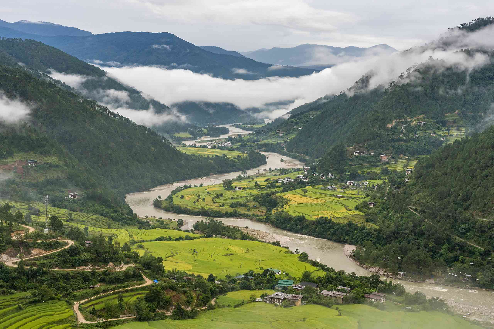
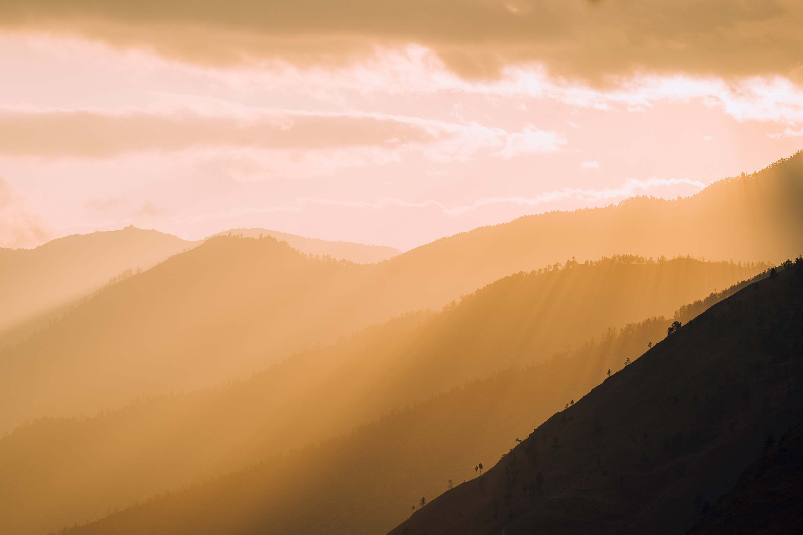
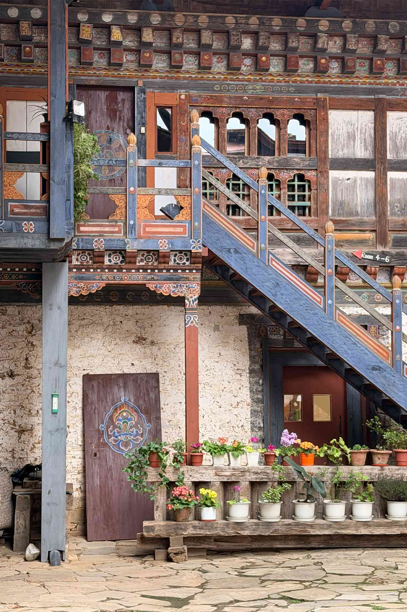
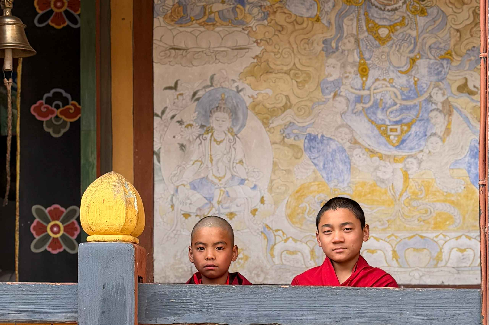
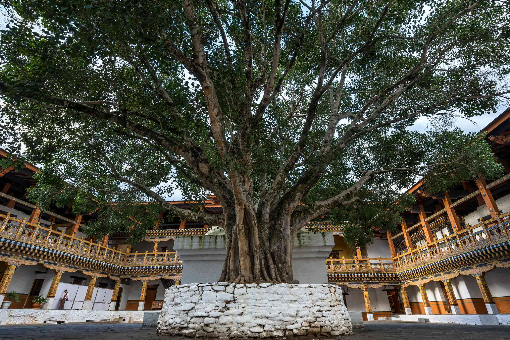
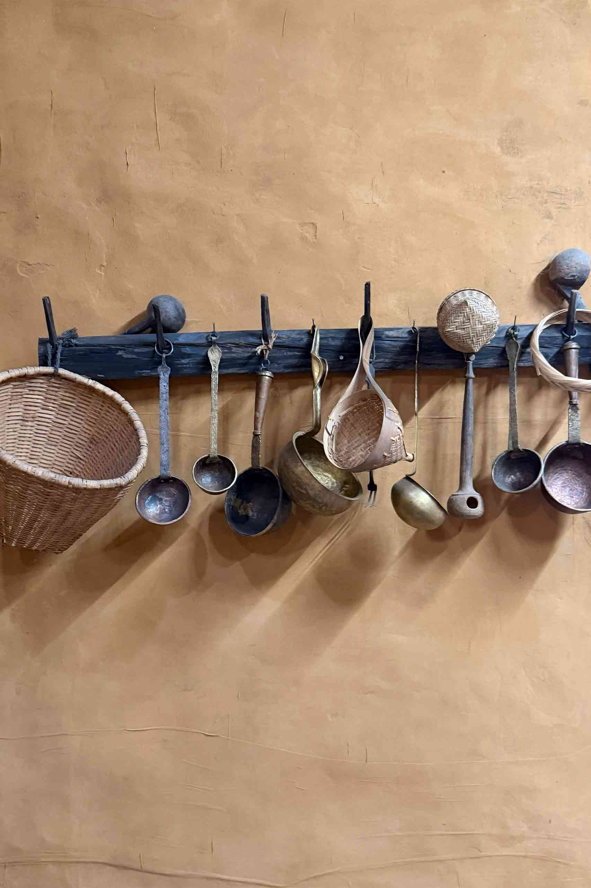
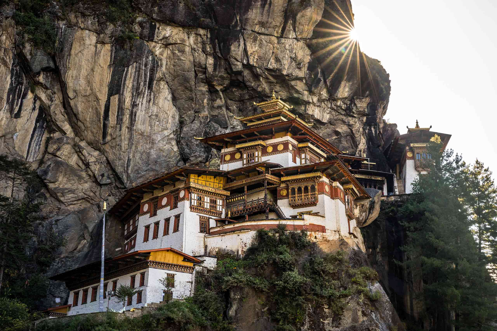
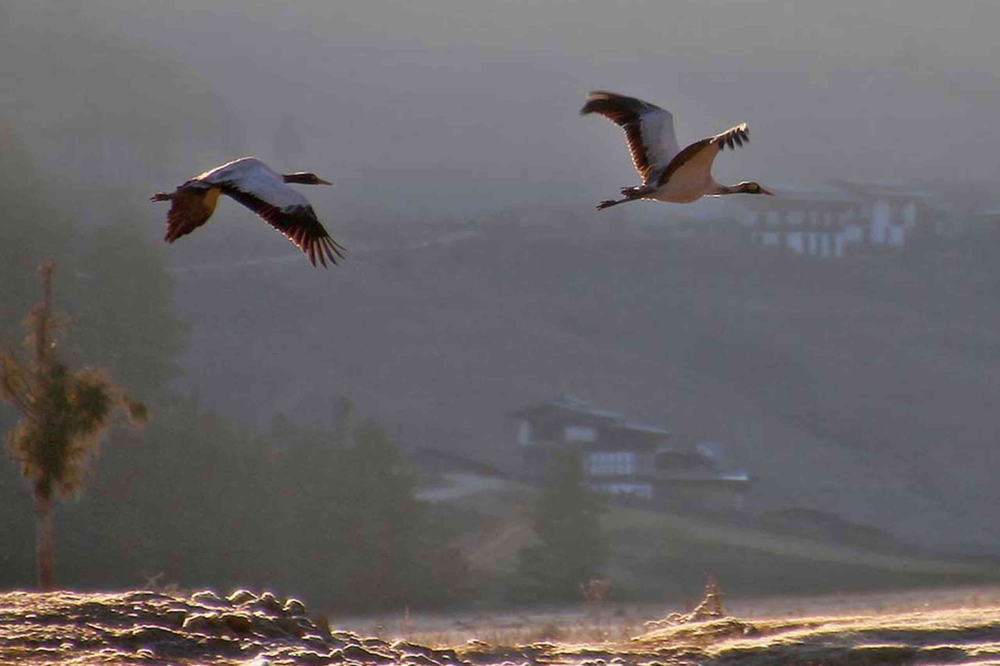

Paro is Bhutan's most storied valley - a place where the ancient and the living
exist side by side without apology. Beyond Tiger's Nest and the dzong lies a community of weavers, farmers,
distillers and homeowners whose lives unfold quietly in the shadow of sacred cliffs.
Every experience here is offered not as a service, but as an invitation into lives
genuinely lived - through shared meals, morning pujas and unhurried conversations over butter tea.
Communities of Paro
In Paro, the most memorable encounters rarely happen at the famous sites - they
happen in farmhouse kitchens, on looms, and along quiet ridgelines, shared with people who have called this
valley home for generations. In the Shaba valley, one family has farmed the same terraced fields for four
generations, rotating between red rice, buckwheat, and the chillies that hang drying along every wall come
autumn. Visitors who spend a morning here are welcomed not as guests to be entertained, but as extra hands for
the day's work - pressing cheese, ploughing, or gathering the harvest alongside people who measure time by the
seasons rather than the clock.

Terraced fields above Shaba valley, farmed by the same family for four
generations.
A short drive away, along the winding road that climbs toward Tiger's Nest, a small
cluster of homes keeps the art of kishuthara weaving alive. It is among Bhutan's most intricate textile
traditions - woven entirely by hand using a supplementary warp technique that can take months to complete a
single piece. The women here learned from their mothers, who learned from theirs, and the patterns they weave
carry memory as much as meaning. Visitors are invited to sit beside the looms, ask questions, and try a few
passes of the shuttle under patient guidance.
On the ridgelines above the valley, a different kind of community is at work. A small
group of young Bhutanese naturalists spend their weekends surveying the slopes and riverbanks, counting birds
and tracking migratory patterns - quietly building one of the only long-term records of Paro's birdlife,
mostly without funding or recognition. Further down the valley, at the ruins of an old dzong, a handful of
monks continue rituals first performed here centuries ago, rising before dawn for a puja that has carried on,
season after season, since long before the fortress fell into ruin.

The ridgelines above Paro, surveyed each weekend by a group of young
local naturalists.
Spend time with the people who live here, and Paro reveals itself differently - not
as a place to see, but as a place to be part of, even briefly.
Heritage Stays in Paro
The walls of one heritage lodge in the valley were built by hand, the traditional
way, using rammed earth nearly a metre thick - a technique that took an entire dry season and the labour of
half the village to complete. Today those same walls keep the lodge's seven guest rooms cool in summer and
warm through the long winter nights, and the family who built them still oversees the kitchen, sorting
chillies on the rooftop in the early morning light.

A traditional Bhutanese farmhouse, its rammed-earth walls nearly a
metre thick.
Higher in the valley, where the road narrows to a dirt track, another family runs a
small working farm with two simple guest rooms above the cowshed. Mornings begin early and loudly - with
cattle, roosters, and fresh milk still warm from the morning milking - and there is no set itinerary beyond
the rhythm of the farm itself.
Elsewhere, a 300-year-old watchtower has been carefully restored into a four-room
guesthouse, its original stone walls and narrow defensive windows left intact. The real draw is the rooftop,
reached by a steep internal stair, where on a clear morning the white form of Taktshang Monastery is visible
clinging to the cliffs across the valley.

Buckwheat fields stretch toward Paro Dzong, a view shared by several
heritage homes in the valley.
And in one lower-valley homestead, there is no reception desk or guest area at all -
visitors are simply shown to a spare room and absorbed into the household, eating at the family's low table
and sharing whatever has been cooked that day. For travellers wanting to understand how a Bhutanese family
actually lives, it is hard to find anything closer.
Food & Flavour of Paro
Perma grew up in a small valley where mornings smelled of woodsmoke and damp
earth. In her family's kitchen, the walls were darkened by years of fire, and a thin blade of Himalayan light
fell through a single window. That kitchen is where she first understood that Bhutanese cooking is simple -
but never plain.
Outside the house, another quiet preparation was always underway. Red chillies - ema
- were spread across rooftops, stone walls, and woven mats to dry in the high mountain sun. For weeks each
autumn, valleys across Bhutan turn crimson as families lay out their harvest. The dry air and strong Himalayan
light slowly pull the moisture from each chilli, concentrating its heat and flavour, until the once-bright
pods become deep, wrinkled reds - ready to be ground, stored, or steamed into the dish that anchors nearly
every Bhutanese table.

Sun-dried ema chillies, fresh heat ripening in the Himalayan air.
One afternoon, when Perma was old enough to cook on her own, her grandmother spoke
the recipe aloud, slowly, as if dictating from a cookbook, and made Perma repeat it back. The dish she was
learning was ema datshi - Bhutan's national dish, and one of the most beloved foods in the country.
Ingredients for Ema Datshi
8-12 fresh green chillies (or dried red chillies, ema kham, soaked 10-15 minutes)
1-2 cups water
1/2 cup Bhutanese datshi cheese, broken into chunks
1-2 tablespoons oil or butter
Salt to taste
Optional: 1-2 teaspoons butter for extra richness

The finished dish - ema datshi, served the way Perma's family has made
it for generations.
Beyond the kitchen, food in Paro is woven into the rhythm of the valley itself. In
one nearby village, a cooperative of women still distil ara - Bhutan's traditional grain spirit - over a wood
fire using a stacked clay-and-bamboo still, a process passed down almost entirely by word of mouth. Before
sunrise each week, farmers gather at the riverside dawn market with red rice, dried chillies, and seasonal
greens, trading and bartering long before the rest of the valley wakes. And once a year, at harvest time, the
cycle comes full circle: families bring in the red rice from the terraced fields and cook a communal meal over
an open fire, sharing it together on mats spread across the stubble.
Hidden Gems of Paro
Most visitors climbing to Tiger's Nest pass directly through a wide meadow about
halfway up the trail, eyes fixed on the monastery still hundreds of metres above. Few stop. Fewer still notice
the small tea house at the meadow's edge, run by a family from the valley below who have served tea to
pilgrims and travellers here for decades. In spring the meadow fills with wildflowers; in autumn, with the
gold of turning birch leaves.

Taktshang Monastery seen from a quiet meadow, away from the main
viewpoint crowds.
Elsewhere in the valley, behind a 15th-century temple whose interior murals are said
to map the Buddhist path to enlightenment, lies a small walled garden unknown to most visitors. A caretaker
tends it in silence each morning, and guests who ask politely, and arrive with some patience, are sometimes
invited through the gate.
At one of Bhutan's oldest temples, the inner sanctum - normally viewed from behind a
railing - is opened fully before 7am for a dawn puja that has been performed here, in some form, for over a
thousand years. Visitors who arrive early are usually permitted to sit quietly at the back, close enough to
feel the heat of the butter lamps.

Early morning light over the valley, the best time to find Paro at its
quietest.
And on the valley's eastern edge, where the road turns to a footpath and disappears
into farmland, a small stone-walled pool sits fed by a natural hot spring - used by farming families for
generations, with no sign, no ticket booth, and no name on any map. What it offers instead is mineral-rich
water, total quiet, and often the company of a farmer or two, equally happy to sit and say nothing for a
while.